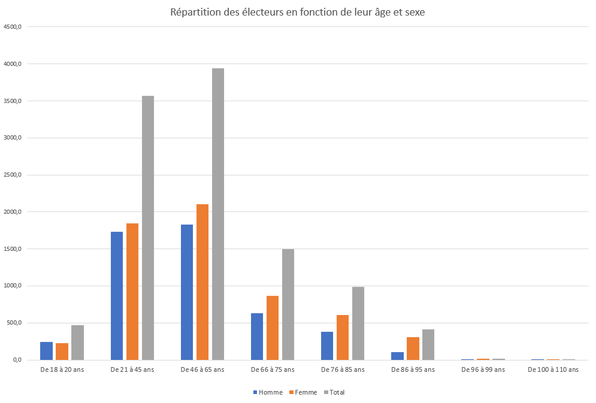

Notamos en este gráfico que parece haber una correlación [es decir, un vínculo] entre los tramos de edad y los partidos políticos votados. De hecho, cuanto más mayores son los ciudadanos, más parecen tender a a votar a los republicanos y, por el contrario, cuanto más jóvenes son, más probabilidades tienen de votar a los republicanos, más probabilidades tienen de votar a Francia. es decir, una tendencia de extrema izquierda.

Parece que los hombres son más propensos a votar por la Reunión Nacional que las mujeres, y... Por otro lado, parece que votan mucho más que los hombres al Partido Socialista.

Nos damos cuenta aquí de que, una vez más, hay una correlación entre ciertos segmentos de la población. El la proporción de votos para la Asamblea Nacional es inversamente proporcional al salario, y y viceversa para el Partido Republicano.


Nos damos cuenta aquí de la distribución de los votantes según su sexo. Podemos ver aquí que cuanto mayor es la edad de los votantes aumenta, se observa un mayor predominio del sexo femenino.
Todas estas correlaciones indican que ciertos segmentos de la población francesa se sienten "en sintonía"... con determinados grupos y, por tanto, con ideas políticas. Esto no es en absoluto un problema, en Por otro lado, se observa que este sistema casi pone de manifiesto las divergencias presentes en la sociedad. francés, dividiendo así a un pueblo que se supone que gobierna de forma homogénea según el concepto de la democracia. De hecho, hoy en día sólo los ganadores tienen realmente poder fuera de él. Los ganadores no siempre son los que el pueblo en su conjunto espera.
Esto podría llevarnos a cuestionar la pertinencia del sistema electoral francés. Tal vez haya otros mejores...
Por favor, recomendamos el vídeo de ScienceEtonnante que evoca sistemas alternativos más eficientes. De hecho, este problema se puede modelar fácilmente con la ayuda de matemáticas y tal vez sea el momento de reformar ese viejo sistema...